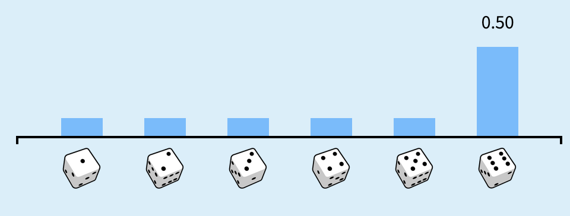

WS 1 Solution 🎲#
Getting Started and Probability Primer
—TODO your name here
Collaboration Statement
TODO brief statement on the nature of your collaboration.
TODO your collaborator’s names here.
Learning Objectives#
Get familiarized with the Jupyterhub interface and the course’s submission system.
Learn where to find course resources.
Practice with the first probability and math concepts needed for the course:
random variables
expectation
conditional expectation
Practice with basic usage of
numpythroughout.Read a research article and learn about the classification of different data science tasks.
1. Course resources and skills check [1 pt]#
1.1: Read through all the pages listed in the syllabus on the course website. Out of the five different academic perspectives listed with the reference textbooks on the course policies page, which one are you most interested in or would be most useful to you? Briefly comment on why.
Your Response: Varies
1.2 Reply to the Course Intros thread on Ed introducing yourself and sharing why you’re interested in taking this course.
TODO post to the Ed discussion thread: https://edstem.org/us/courses/71545/discussion
Coding interface#
Programming language: Python. This course will be taught in Python. To get the most out of the course, it’s important you don’t feel bogged down by the syntax of the language so that you can focus on the concepts introduced. If you do not have prior experience with Python, that’s no problem. Please do take the time at start of the course to study and practice it.
For review, I recommend going through an online Python tutorial such as this one: https://www.learnpython.org/, and going through all the section under “Learn the Basics.” I will also provide pointers to the relevant “Advanced Tutorial” sections as we utilize them in the course.
Libraries. We will be using a typical data science stack throughout the course:
pandas: for data table manipulation and analysis
seaborn + matplotlib: for figure visualization
ipywidgets: for interactive widgets
We will introduce the functionality of these libraries as we need them in the course, so we do not assume prior knowledge of these libraries. However, I do encourage you to refer to the documentation for all of them, as they are extensive and well-written.
1.3. We’ll begin with some basic numpy operations in this worksheet. Complete the TODOs below.
Tip
First, try to guess what the code does. Then, run the code and see if you were correct. Finally, check the documentation if you want to learn more about the function.
# The standard way to import numpy
import numpy as np
Briefly describe what the code below does:
print(np.arange(1,7))
Your Response: np.arange(1,7) creates an array of integers from 1 to 6 – the 7 is excluded.
Briefly describe what the code below does:
print(np.ones(6))
Your Response: np.ones(6) creates an array of 6 ones, specifically of shape (6,).
# The standard way to import numpy
import numpy as np
# TODO experiment with code in this cell
Tip
Not sure how a function call works? Play and experiment with it in a code cell!
Computing environment. We will be using Jupyter notebooks (.ipynb files) for all assignments. We have a centralized Jupyterhub server which provides a uniform environment for everyone, and you can access it anywhere on campus using your MHC credentials:
Warning
If you would like to run your code locally, you are welcome to do so and we can provide the necessary list of installation packages. However, we note that we unfortunately cannot help troubleshoot issues with your local environment. In particular, some of the scientific computing libraries can be finnicky to install on ARM-based Macs, which is why we have centralized our Jupyterhub server.
There are two types of cells in a Jupyter notebook:
Markdown cells: for writing text
Code cells: for writing and running code
Read through this guide to learn how to format markdown cells with mathematical notation. We will be using both markdown and latex in this course.
Math#
We will be using mathematical notation to formalize many concepts in this course. To begin, this worksheet will be using the notation for sums:
You may also see only a subscript underneath the summation symbol, which means the sum is over all the elements in the set. For example, the sum of all elements in the set \(A=\{1,2,3\}\) is written as:
We’ll also be using the indicator function \(\mathbb{I}(\text{condition})\):
For example, \(\mathbb{I}(X = x)\) will be 1 if \(X = x\) and 0 otherwise.
2. Probability concepts [1 pt]#
Chance events#
Probability is the mathematical framework that allows us to reason about randomness and chance.
Read Ch 1 of Seeing Theory: Chance events for a brief refresher on random events.
Reading notes
I will be adding notes to supplement the reading when necessary.
To fill in some notation of the seeing theory section:
\(P(A)\) is the probability of event \(A\) happening. In the reading, we are examining the probability of a fair coin coming up heads or tails.
A fair coin has equal probability of landing heads or tails, so \(P(\text{heads}) = 0.5\) and \(P(\text{tails}) = 0.5\).
If we assign heads and tails to be numeric outcomes, e.g. \(\text{heads} = 1\) and \(\text{tails} = 0\), then the coin flip can be thought of as a random variable, which we often denote as a capital letter \(X\).
In order for something to be considered a valid (discrete) random variable, the probability of each event must be between 0 and 1, and the sum of the probabilities of all events must equal 1. In the case of a fair coin, \(P(X=1) + P(X=0) = 0.5 + 0.5 = 1\).
We can think of a random variable as a random number generator that can be repeated many times, generating a sample of outcomes. These will be subscripted, e.g. a sample of \(N\) coin flips will be \(X_1, X_2, X_3, \cdots, X_N\).
The observed outcomes of a random variable do not necessarily match the true probability of the outcomes. If you click “Flip the coin” a couple of times, you’ll see that you don’t always get 50% heads and 50% tails.
It is only in the long run that the observed outcomes match the true probability of the process, which you can see if you click “Flip 100 times”.
Expectation#
Expectation provides a measure of the “center” value of a random variable. Read Ch 1 of Seeing Theory: Expectation.
Reading notes
The reading uses \(\mathcal{X}\) to denote the set of all possible values that a random variable can take. In the case of a fair six-sided die roll, \(\mathcal{X} = \{1, 2, 3, 4, 5, 6\}\).
Thus the summation over \(x \in \mathcal{X}\) is summing over all possible values that the random variable can take.
Let’s now numerically compute the expected value of a roll of a fair 6-sided die. If the six-sided die is fair, then each of the outcomes has equal probability of 1/6. Run the following code to compute the expected value:
# np.arange(1, 7) creates an np.array of the integers from 1 to 6
die_outcomes = np.arange(1, 7)
# np.ones(6) creates an np.array of 6 ones, then dividing by 6 scales each element to 1/6
probabilities = np.ones(6) / 6
# If we multiply two np.arrays that have the same length,
# the result will be an np.array of the element-wise products
expected_value = np.sum(die_outcomes * probabilities)
print(f"The expected value of a fair die roll is: {expected_value}")
The expected value of a fair die roll is: 3.5
Let’s now compute the expected value of a roll of a fair 6-sided die where each outcome has a different probability. In the Seeing Theory widget, drag the slider for the true probability of 6 to 0.5. The probability of the other outcomes should change to 0.1 each to keep the sum of the probabilities at 1:

2.1. Write code to compute the expected value of this new distribution of probabilities. You can use the code from above as a template:
# TODO your code here
### BEGIN SOLUTION
die_outcomes = np.arange(1, 7)
probabilities = [0.1, 0.1, 0.1, 0.1, 0.1, 0.5]
expected_value = np.sum(die_outcomes * probabilities)
### END SOLUTION
print(f"The expected value of the modified die roll is: {expected_value}")
The expected value of the modified die roll is: 4.5
Now try simulating the dice rolls, by clicking “Roll 100 times” multiple times in the Seeing Theory widget and see if your code matches the estimated expected value. What do you observe about the estimated expected value as the number of rolls increases?
Your Response: As the number of rolls increases, the “noise” in the estimated expected value decreases, and the estimated expected value converges to the true expected value of 4.5.
Note
The expected value of a binary random variable with outcomes \(\{0, 1\}\) is equivalent to the probability of the outcome being 1. For example, in our coin flip example, the expected value is the probability the coin comes up heads.
Simulating a random variable and probability distributions#
A probability distribution describes how likely each possible value of the random variable is. You can think of a random variable as the “what” (what values can occur) and the probability distribution as the “how likely” (how likely each value is to occur).
For example, when we roll a die, the random variable is the number that comes up (1-6), while the probability distribution tells us that each number has a 1/6 chance of occurring. The same random variable could have different probability distributions - for instance, if the die was weighted to favor certain numbers.
There are many types of probability distributions, but here we will begin with the categorical distribution for modeling discrete random variables.
The categorical distribution is a discrete probability distribution where each outcome has a fixed probability of occurring.
In the coin flip and dice roll examples, we were looking at categorical distributions as there were a fixed number of outcomes: 2 for the coin flip, 6 for the dice roll. In the case where there are only 2 outcomes, the categorical distribution is known as the Bernoulli distribution.
Numpy has a built-in functionality to generate random numbers from a categorical distribution: numpy.random.Generator.choice
For example, the following code generates n_samples=1000 random numbers from a categorical distribution with 2 outcomes [0, 1] and probabilities p=[0.5, 0.5]:
# This creates a generator with a fixed seed, so we can generate the same random numbers
rng = np.random.default_rng(seed=42)
n_samples = 1000
coin_flips = rng.choice([0, 1], size=n_samples, p=[0.5, 0.5])
coin_flips is an np.array of length n_samples, where each element is either 0 or 1.
If we represent heads as 1 and tails as 0, then we can count the number of heads that came up by summing up all the 1s in the coin_flips array, which should be close to 500:
n_heads = np.sum(coin_flips)
print(f"Number of heads: {n_heads}")
Number of heads: 497
Once we have a sample of outcomes, we can estimate the expected value of the random variable by taking the mean of the sample. In a slight abuse of notation, we can denote the estimated expectation or sample mean as \(\hat{E}[X]\), which averages over the \(n\) samples of the random variable \(X\):
Notation
I will be using the hat \(\hat{\;}\) notation throughout the course to denote an estimation of some quantity, which will always be computed from a sample of data.
We can then compute this estimated expectation of the random variable by using Numpy’s np.mean function:
estimated_expectation = np.mean(coin_flips)
print(f"Estimated expectation of coin flips: {estimated_expectation}")
Estimated expectation of coin flips: 0.497
2.2. Let’s now compute the estimated expectation of rolling 1000 fair dice, and compare it to the true expected value we computed earlier. Use the code from above as a template for the outcomes and probabilities:
# TODO your code here
### BEGIN SOLUTION
dice_outcomes = np.arange(1, 7)
dice_probabilities = np.ones(6) / 6
n_samples = 1000
dice_rolls = rng.choice(dice_outcomes, size=n_samples, p=dice_probabilities)
dice_estimated_expectation = np.mean(dice_rolls)
print(f"Estimated expectation of dice rolls: {dice_estimated_expectation}")
### END SOLUTION
Estimated expectation of dice rolls: 3.542
What is your estimate of the expected value of the dice roll?
Your Response: 3.491
We often say that a random variable is distributed according to or “follows” a certain probability distribution. For example, we say that the random variable of a coin flip is distributed according to a Bernoulli distribution, and the random variable of a dice roll is distributed according to a categorical distribution.
You will often see probability distributions written in the following way:
Here, the capital letter \(X\) represents the random variable, and the tilde symbol \(\sim\) means “is distributed according to”. The parentheses contain the parameters of the distribution. For example, the dice roll example we looked at earlier can be written as:
Where \(p=\{\frac{1}{6}, \frac{1}{6}, \frac{1}{6}, \frac{1}{6}, \frac{1}{6}, \frac{1}{6}\}\) is the probability of the dice outcomes \(\mathcal{X} = \{1, 2, 3, 4, 5, 6\}\).
A special case of the categorical distribution is the Bernoulli distribution, which has only two outcomes \(\{0, 1\}\):
Where \(p\) is the probability of the outcome 1.
3. Estimating a conditional expectation [1 pt]#
A common task we will be doing in this course is estimating the expectation of a variable given some other condition. For example, we may observe the following sample pairs:
where \(X\) is binary and \(Y\) takes on real values.
Run the cell below, which defines a data generating process that generates n_samples pairs of \((X, Y)\) values. Note that it returns two arrays, X and Y, which are the same length.
def data_generating_process(n_samples):
"""
Generate a sample of $n$ pairs of $(X, Y)$ values.
Args:
n_samples (int): The number of samples to generate.
Returns:
X (np.array): An array of $n$ binary values.
Y (np.array): An array of $n$ real values.
"""
# Generate binary X values with equal probability of 0 and 1
X = rng.choice([0, 1], size=n_samples, p=[0.5, 0.5])
# Generate Y values based on the value of X using np.where
Y = np.where(X == 1,
# If X=1, generate from this distribution
rng.choice(np.arange(1, 7), size=n_samples, p=np.ones(6) / 6),
# If X=0, generate from this distribution
rng.choice(np.arange(1, 7), size=n_samples, p=[0.1, 0.1, 0.1, 0.1, 0.1, 0.5])
)
return X, Y
X, Y = data_generating_process(n_samples=10000)
We can then ask a question: what is the estimated expected value of \(Y\), given that \(X=0\)? This is known as a conditional expectation.
To express this mathematically, we can write:
Where \(n_0\) is the number of times \(X=0\) in the sample, that is:
Tip
When interpreting the above equation, we can read the vertical bar \(\mid\) as “given that”.
We can compute the estimated conditional expectation of \(Y\) given \(X=0\) a couple of ways. First, we can translate the above equation literally:
# X == 0 returns an array of booleans, where an element is True if the corresponding element in X is 0
# np.sum then counts the number of True values in the array
n0 = np.sum(X == 0)
# (X == 0) * Y is an element-wise multiplication of the two arrays
conditional_sum = np.sum((X == 0) * Y)
conditional_expectation = conditional_sum / n0
print(f"Estimated conditional expectation of Y given X=0: {conditional_expectation}")
Estimated conditional expectation of Y given X=0: 4.526189524190324
We can also use numpy’s boolean indexing to filter out the values of \(Y\) where \(X=0\) and then take the mean:
# Filter out the values of Y where X=0
Y_given_X0 = Y[X == 0]
# This will be the number of times X=0 in the sample
print(Y_given_X0.shape)
# Take the mean of the filtered array
conditional_expectation = np.mean(Y_given_X0)
print(f"Estimated conditional expectation of Y given X=0: {conditional_expectation}")
(5002,)
Estimated conditional expectation of Y given X=0: 4.526189524190324
3.1. Now, compute the estimated conditional expectation of \(Y\) given \(X=1\) with whichever method you prefer:
# TODO your code here
### BEGIN SOLUTION
conditional_expectation_given_one = np.mean(Y[X == 1])
print(f"Estimated conditional expectation of Y given X=1: {conditional_expectation_given_one}")
### END SOLUTION
Estimated conditional expectation of Y given X=1: 3.5054021608643455
What is your estimate of the conditional expectation of \(Y\) given \(X=1\)?
Your Response: 3.505
If you read the data_generating_process function carefully, you may already have an idea of what the answer to these two conditional expectations are, without having to estimate them. The way that the data are generated is as follows:
Flip a fair coin
If the coin comes up heads, roll a fair 6-sided die
If the coin comes up tails, roll our weighted 6-sided die from earlier, with probabilities of events as follows:
Outcome |
Probability |
|---|---|
1 |
0.1 |
2 |
0.1 |
3 |
0.1 |
4 |
0.1 |
5 |
0.1 |
6 |
0.5 |
Takeaway
The challenge in most real-world applications is that we don’t know the data generating process, and so we have to estimate quantities like the conditional expectation from a sample of data. Much of data-driven empirical research – causal or non-causal – is about estimating quantities (like the conditional expectation) that help describe some variable of interest.
3.2. Let’s also practice translating mathematical statements into real-world expressions.
Suppose we have the following variable definitions:
\(Y\): a high school student’s SAT score.
\(T\): a binary variable indicating a student’s participation in an after-school tutoring program: \(T=1\) if they participated, \(T=0\) otherwise.
How would you state the following mathematical expression in words?
Your response: The expected SAT score of students given that they participated in the tutoring program.
Consider another scenario:
\(Y\): a binary variable indicating whether a person has lung cancer: \(Y=1\) if they have lung cancer, \(Y=0\) otherwise.
\(T\): a binary variable indicating whether a person smokes: \(T=1\) if they smoke, \(T=0\) if they don’t.
How would you state the following mathematical expression in words?
Your response: The probability a person has lung cancer given that they do not smoke.
Note
We need to be careful in not imbuing any causal interpretation into the above expressions. We may have an idea of what the causal relationship between \(T\) and \(Y\) is, but we cannot make any causal claims from the above expression alone – it is purely an associational statement. The following reading will begin to explore how we can make causal claims from data.
4. Hernán et al. 2019 reading [1 pt]#
One of the goals of this course is to connect the concepts we’ve been learning to modern scientific discourse. To that end, we will periodically read and discuss research across causal inference. Our first reading is:
Read pages 42 - 45 and Table 1 in the article, and answer the following reflection questions:
4.1 What are the three scientific tasks of data science described in the article? Provide an example for each – they can come from any field that you’re interested in.
Your Response:
The three scientific tasks of data science described in the article are:
Description: what percentage of low-income neighborhoods in Miami-Dade County have a high rate of greenery?
Prediction: what is the probability that a person will vote for a certain candidate in the next election given the past voting history and demographics? This is purely a “mapping inputs to outputs” task.
Causal inference (counterfactual prediction): Does taking a new GLP-1 drug reduce the risk of type 2 diabetes?
4.2 According to the authors, what distinguishes prediction tasks from causal inference tasks?
Your Response: Causal inference tasks are distinguished from prediction tasks by the role of expert knowledge. Experts need to specify the question, identify/generate relevant data sources, and also describe the causal structure of the system under study. Causal knowledge, usually encoded in the form of unverifiable assumptions and a causal graph structure, is also required to perform causal inference.
4.3 What questions do you have about the reading? These can be conceptual or bigger picture.
Your Response: Varies
5. Reflection [1 pt]#
5.1 How much time outside of class did it take you to complete this worksheet? How long did it take you to read the selected pages of the Hernan et al. 2019 article?
Your Response: Varies
5.2 What is one thing you have a better understanding of after completing this worksheet? This could be about the concepts, the reading, or the code.
Your Response: Varies
5.3 How comfortable do you feel about your mathematical and programming preparation for this course?
Your Response: Varies
How to submit
Follow the instructions on the course website to submit your worksheet.